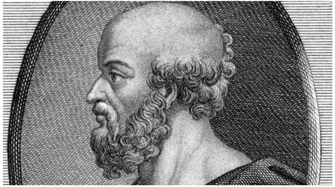
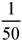
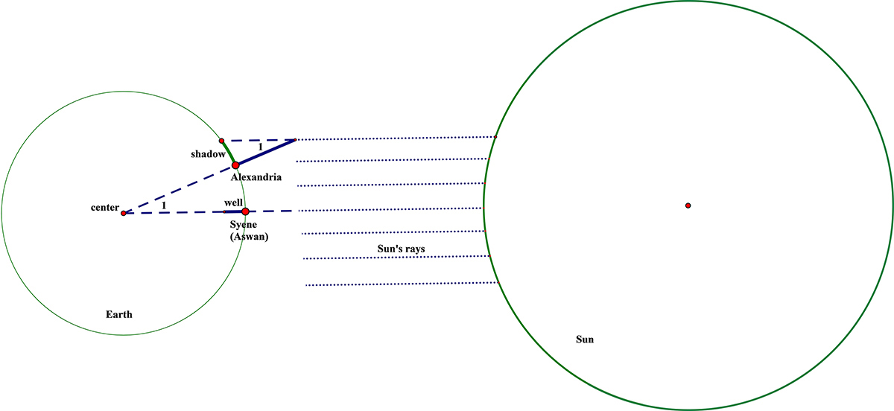
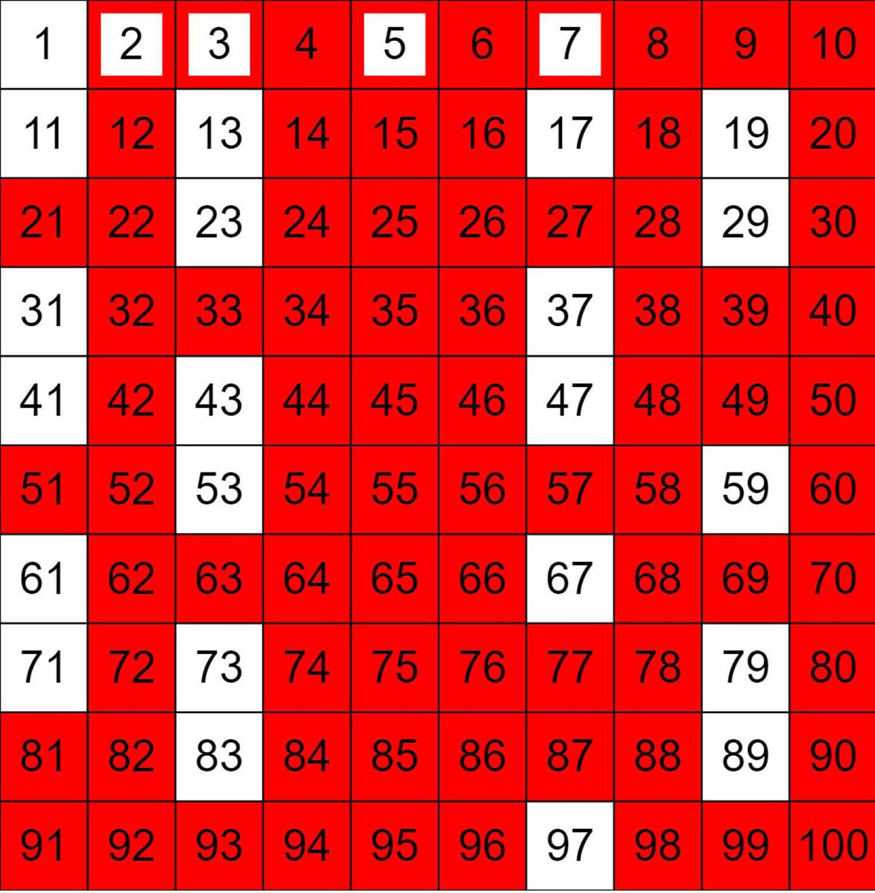

Eratosthenes: Greek (276–194 BCE)
When we look back to the brilliant mathematicians of ancient Greece, our knowledge of their individual lives is, understandably, rather limited. In the case of Eratosthenes, who was largely known for his mathematical and geographical achievements, we again do not have record of many details of his life. Despite this dearth of personal information, we do know that his amazing geographical skills enabled the people of his day to understand and garner an appreciation of the size of the earth. Later we will consider his brilliant method of measurement; but, in the meantime, let us consider his biography—or, at least, what little we know about it.
Eratosthenes was born in 276 BCE in Cyrene, which is now a part of Libya.1 He was a son of Aglaos and, in his youth, studied in a local school where basic academic subjects were taught. Later, in Athens, he continued his studies, which centered on philosophy. There he also wrote poetry, including Hermes, a religiously oriented poem concentrating on the life history of the gods. He also wrote about historical topics, and those writings were quite well received at the time. As a result, in 245 BCE and aged only thirty, he was offered a position as librarian of the Great Library of Alexandria. Upon accepting the role, he moved to Alexandria, where he remained for the rest of his life. Within five years, he was appointed chief librarian, one of the responsibilities of which was tutoring the children of royalty. During his tenure as chief librarian, he enlarged the holdings of the library considerably. He was motivated by the notion that he would want his library to be considered the best in the Greek world. As we can see from his writings, he believed that all humans were good—a theme that contradicted Aristotle, who believed that essentially only the Greeks were good.
In 195 BCE, Eratosthenes contracted ophthalmia, an inflammation of the eye, which resulted in blindness. Afterward, he became very depressed and tried to commit suicide by starving himself. Death actually came a year later, in 194 BCE, when he had reached the rather-old age of eighty-two.
Two contributions have preserved Eratosthenes’s name and have allowed him to remain famous today. As we hinted at earlier, Eratosthenes developed a very clever technique for measuring the circumference of the earth. Today, such a task is not terribly difficult; thousands of years ago, though, this was no mean feat. His measuring of the earth was one of the earliest forms of geometry—in fact, the word geometry is derived from the Greek for “earth measurement.” In about 230 BCE, he measured the earth’s circumference, and it was remarkably accurate—less than 2 percent in error.

Figure 6.1. Eratosthenes. It is a copper engraving from the 18th century. See https://www.alamy.com/stock-photo-eratosthenes-of-cyrene-circa-276-194-bc-greek-scholar-chief-librarian-23533697.html.
How did he manage such an accomplishment? To make this measurement, Eratosthenes relied on the relationship of alternate-interior angles of parallel lines, as well as his resources as the chief librarian of Alexandria. Through the library, Eratosthenes had access to records of calendar events. Upon examining these records, he discovered that in a town called Syene (now called Aswan) on the Nile River, the sun was directly overhead at noon on a certain day of the year. As a result of the sun’s position, the bottom of a deep well in Syene was entirely lit, and a vertical pole (being parallel to the rays hitting it) cast no shadow.
At the same time, however, a vertical pole in the city of Alexandria did cast a shadow. When that day arrived again, Eratosthenes measured the angle formed by such a pole and the ray of light from the sun that went past the top of the pole to the far end of the shadow (∠1 in fig. 6.2). He found that angle to be about 7°12’, or

of 360°.Assuming the rays of the sun to be parallel, he knew that the angle at the center of the earth must be congruent to ∠1, and, hence, must also measure approximately  of 360°. Since Syene and Alexandria were nearly on the same meridian, Syene must be located on the particular radius of the circle that was parallel to the rays of the sun. Eratosthenes thus deduced that the distance between Syene and Alexandria was
of 360°. Since Syene and Alexandria were nearly on the same meridian, Syene must be located on the particular radius of the circle that was parallel to the rays of the sun. Eratosthenes thus deduced that the distance between Syene and Alexandria was  of the circumference of the earth. The distance from Syene to Alexandria was believed to be about 5,000 Greek stadia. (A stadium was a unit of measurement equal to the length of an Olympic or Egyptian stadium.) Therefore, Eratosthenes concluded that the circumference of the earth was about 250,000 Greek stadia, or about 24,660 miles. This is very close to modern calculations, which have determined the circumference of the earth to be 24,901 miles. So how’s that for some real geometry!
of the circumference of the earth. The distance from Syene to Alexandria was believed to be about 5,000 Greek stadia. (A stadium was a unit of measurement equal to the length of an Olympic or Egyptian stadium.) Therefore, Eratosthenes concluded that the circumference of the earth was about 250,000 Greek stadia, or about 24,660 miles. This is very close to modern calculations, which have determined the circumference of the earth to be 24,901 miles. So how’s that for some real geometry!
Eratosthenes also made a contribution to our understanding of numbers. More specifically, he developed a method that we can use to generate prime numbers—that is, numbers that have exactly two divisors: the number 1 and the number itself. This method uses what we call today the sieve of Eratosthenes, which begins with a table of consecutive numbers (going on as far as you wish) and requires scratching out certain multiples of numbers until all that remain are the prime numbers within the numerical range of the table. Let’s consider beginning with the numbers from 1 to 100, as shown in figure 6.3. The procedure that Eratosthenes suggested is to begin with the number 2 and scratch out every multiple of 2 throughout the table. Then, go to the next number that is still not scratched out—the number 3—and once again scratch out all the multiples of that number. Continuing this procedure, we come to the next remaining number, which is 5, and, once again, we scratch out all multiples of 5 in the table. The next number we consider is the number 7, and again we scratch out all of the multiples of 7 that remain on the chart (i.e., the number 49). Using his procedure, we are left with only prime numbers. Therefore, in figure 6.3, we see all the prime

Figure 6.2. Not to scale.

Figure 6.3. The sieve of Eratosthenes. In this figure, the numbers 2, 3, 5, and 7 were the only numbers required to eliminate all nonprime numbers between 2 and 100 (that is why they appear in a smaller white box).
numbers up to 100 are those that have not been eliminated. Note: Even though the number 1 was originally on our table, it is by definition not a prime number. This is because a prime number has exactly two factors (or divisors): itself and the number 1. Because the number one has only one factor or divisor (the number 1 itself), the number 1 is not a prime number.
Here we have two contributions that Eratosthenes has made to our understanding of mathematics, one in geometry, and the other in number theory. Considering the era in which these discoveries were made, and the fact that they still hold up today, we can say they were quite astonishing.